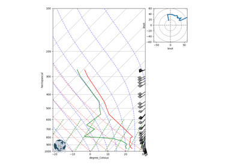
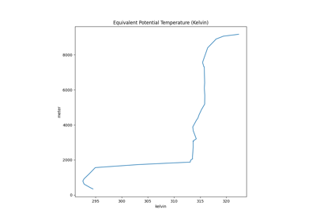
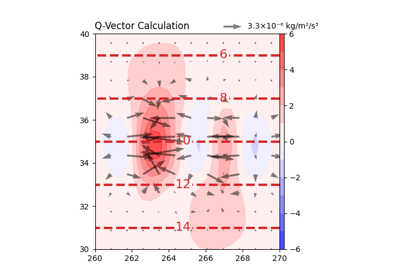
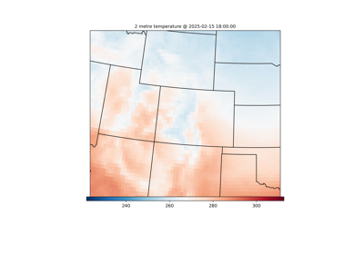

Example Gallery#
For more MetPy examples, please visit the MetPy Cookbook on Project Pythia.
General Examples#
Examples of using a variety of MetPy’s functionality together.


Cross Section Analysis



Advanced Sounding Plot with Complex Layout
Advanced Sounding Plot with Complex Layout
Calculations#
Examples using various calculation functions from MetPy.



Equivalent Potential Temperature
Equivalent Potential Temperature



Q-Vector


File Formats#
Examples using MetPy’s support for reading various file formats.


Gridding#
Examples generating a grid of data from scattered point observations.


Inverse Distance Verification: Cressman and Barnes
Inverse Distance Verification: Cressman and Barnes

Plotting#
Examples using MetPy’s various specialty plotting routines.


Remote Data#
Examples using MetPy’s clients for accessing data from remote data sources, like public AWS S3 buckets.

ML Weather Prediction Access and Plotting
ML Weather Prediction Access and Plotting
Remote Data Access